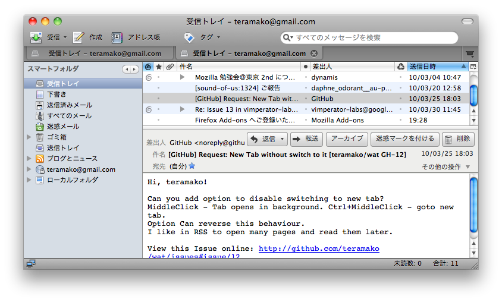

Thunderbird
タブ拡張(WAT)
Mozilla 勉強会@東京 2010-04-03
|
by teramako teramako@gmail.com
What is WAT
Thunderbird 3 でWebページをタブに開くことを可能にする拡張機能
Screenshots
きっかけ
Thunderbirdを立ち上げたら、ツールメニューからエラーコンソールを開き、以下のコードを追加します。
Components.classes['@mozilla.org/appshell/window-mediator;1']
.getService(Components.interfaces.nsIWindowMediator)
.getMostRecentWindow("mail:3pane")
.document.getElementById("tabmail")
.openTab("contentTab", {
contentPage: "https://wave.google.com/wave/?nouacheck"
});
Thunderbird 3の新しいタブ機能でGoogle Waveの受信箱が開けるみたいな初心者に優しくないやり方が紹介されているのを見て、腹立たしく思い作った。
機能
- リンクの右クリック(コンテキストメニュー)からとか
- 中ボタンクリックとか
- URLの登録も可能
- RSSフィードの購読(Thunderbirdの「ブログとニュース」アカウントでの購読)
タブ機能において、Thunderbrid3が持つべき機能を追加しているだけ
WATはFirefoxの車輪の再発明で出来ています
拡張なしのThunderbird 3
出来ないことだらけ (version 3.0.3時点)
- タブに開く機能はあってもインターフェースがない
- Webページの「戻る」「進む」ができない
- 開けるタブ数は10個まで (ハードコーディング)
- ページのアイコンが表示されない
- RSSフィードの検出なんてもってのほか
- metaタグのリダイレクト(
<meta http-equiv="refresh" content="...">)が動作しない
WATがあれば全部できる！
WATの制限事項
- ロケーションバーはない
- JavaScript URI
- 現状、
<a href="javascript:...">だったらloadURIしている
(セキュリティ的に怖いので廃止したい)
- Thunderbird側で制限を設けていると思われる
(解消方法が分からない)
- 同様に
<iframe src="javascript:...">も動作しない場合がある
(GoogleCalendarのToDo)
- 人気のThunderBrowseでも動作しない
- タブを11個以上開くときは警告を出す
(既存機能を尊重した結果)
- 他ドメインへのリンクは左クリックでは外部ブラウザへ開く
- Thunderbirdでブラウジングはあくまで補助機能であるという考え
Thunderbirdタブ実装
Firefoxとの比較を交えて
tabmail要素
Thunderbird3のタブ実装形態はFirefoxとは異なり、tabbrowser要素はない
tabmailという要素がtabbrowserの代わり
-
chrome://messenger/content/tabmail.xml#tabmailにバインド
参照: tabmail.xml - MXR
- タブに幾つかの種類がある
- タブが開かれた時、browser要素が新たに生成されるとは限らない
- タブに開くには、
tabmail.openTabメソッドを使用する
タブの種類
Firefoxは1種類だが、Thunderbirdには(デフォルトでは)6つの種類がある
tabmail.openTabメソッドの第一引数で指定
種類
- "contentTab"
- 通常のWebコンテンツ
- "chromeTab"
- chrome URI, about URI等のThunderbird内部コンテンツ
contentTabとの違いは、browser要素にdisablesecurity="true"の属性- "folder"
- メッセージフォルダ
- 
- "message"
- メッセージ
- "glodaFacet"
- 検索結果
- "glodaList"
- 検索結果から開いたメッセージリストとメッセージ内容
タブに開く
tabmail.openTabメソッドを使用する
var tabmail = document.getElementById("tabmail");
tabmail.openTab(aTabModeName, aArgs);
参照: comm-central comm-central/mail/base/content/tabmail.xml
主な処理
- tabmail.tabModes[aTabModeName]の取得
-
新たなタブを作らず、タブの選択のみにするか判断
- aTabModeNameがcontentTabの場合、既に同じURLを開いているか等
- tab要素の生成
- tabmail.tabModes[aTabModeName].openTab または tabmail.tabModes[aTabModeName].tabType.openTab に aArgs を渡して実行
引数
- aTabModeName (String)
- aArgs (Object)
aTabModeName
参照：前項
aArgs
aTabModeNameによって異なるプロパティをもつオブジェクト
全てに共通するプロパティ
- background
- バックグラウンドに開くか (Boolean)
タブに開く - contentTab
Webページを開くモード
- contentPage
- URL (String)
- 必須
- clickHandler
- onclick属性の値 (String)
- 省略時、
specialTabs.defaultClickHandler(event)が使用される
参照: comm-central comm-central/mail/base/content/specialTabs.js#221
Example
var tabmail = document.getElementById("tabmail");
tabmail.openTab("contentTab", {
contentPage: "http://example.com",
background: true,
clickHandler: "specialTabs.siteClickHandler(event, /^https?:\\/\\/example\\.com\\//)"
});
Note
- browser要素に
disablehistory="true"があり、ページ履歴が記録されない
clickHandlerを定めないと、specialTabs.defaultClickHandler(event)が使用され、リンククリック時は全て外部ブラウザに開かれるspecialTabs.siteClickHandlerは第二引数に正規表現オブジェクトを取り、リンクURLとマッチする場合はそのタブに開くようになる
タブに開く - chromeTab
chrome URI, about URIを開くモード
- chromePage
- URL (String)
- 必須
- clickHandler
- onclick属性の値 (String)
- 省略時、
specialTabs.defaultClickHandler(event)が使用される
参照: comm-central comm-central/mail/base/content/specialTabs.js#652
Example
var tabmail = document.getElementById("tabmail");
tabmail.openTab("chromeTab", {
chromePage: "chrome://global/content/console.xul"
});
Note
- chromeTabで作られるbrowser要素は
disablesecurity="true"となっている。
- browser要素のtype属性に
content-primaryが定められない(コード中コメントアウト)ためwindow.contentからの参照が不可
タブに開く - folder
メッセージフォルダを開くモード
- folder
- folderオブジェクト (nsIMsgFolder)
- 必須
- folderPaneVisible
- フォルダツリーを表示するか否か (Boolean)
- 省略時は最初のタブ設定を流用
- messagePaneVisible
- メッセージを表示するか否か (Boolean)
- 省略時は最初のタブ設定を流用
- msgHdr
- messageオブジェクト (nsIMsgDBHdr)
- 選択するメッセージ
- forceSelectMessage
- msgHdrと組み合わせて使う (Boolean)
- searchMode
- 検索モード
- "global" (すべてのメッセージを検索)
- 0 (件名または差出人、受信者)
- 1 (件名または差出人)
- 2 (件名または宛先、Cc)
- 3 (件名)
- 4 (差出人)
- 5 (宛先または Cc)
- 6 (メッセージ本文)
参照: comm-central comm-central/mail/base/content/mailTabs.js
Example
var tabmail = document.getElemenetById("tabmail");
tabmail.openTab("folder", {
folder: gFolderTreeView.getSelectedFolders()[0],
msgHdr: gFolderDisplay.selectedMessage,
folderPaneVisible: false
});
タブに開く - message
メッセージを開くモード
- msgHdr
- メッセージオブジェクト (nsIMsgDBHdr)
- 必須
- viewWrapperToClone
-
- メッセージビューオブジェクト (Object)
参照: comm-central comm-central/mail/base/content/mailTabs.js
Example
var tabmail = document.getElmenetById("tabmail");
tabmail.openTab("message", {
msgHdr: gFolderDisplay.selectedMessage,
viewWrapperToClone: gFolderDisplay.view,
background: true
});
Note
viewWrapperToCloneを指定しないと、そのビューの次/前のメッセージへの移動ができない
WATでのタブとブラウザ実装
Firefoxからいろいろ拝借
タブに開くメソッド実装
WAT.openTab(aURL)
参照: chrome/content/wat.js at version-0.5 from teramako's wat - GitHub
- aURLをnsIURIに変換
-
URIスキームでcontentTabかchromeTabかを判定
- chrome,aboutスキームならchromeTab
- それ以外はcontentTab
-
tabmail.openTabに渡す引数設定
- contentTabならば、
{ conentPage, clickHandler }の生成
- chromeTabならば、
{ chromePage, clickHandler }の生成
- tabmail.openTabの実行
- contentTabの場合、履歴を有効にする
履歴(戻る、進む)の有効化
デフォルトでは履歴が無効化(disablehistory=true)されている
有効にするにはnsISHistoryインスタンスを生成してbrowser.webNavigation.sessionHistoryに代入する
function enableSessionHistory(browser){
if (!browser.hasAttribute("disablehistory"))
return;
browser.removeAttribute("disablehistory");
try {
os.addObserver(browser, "browser:purge-session-history", false);
browser.webNavigation.sessionHistory =
Cc["@mozilla.org/browser/shistory;1"].createInstance(Ci.nsISHistory);
} catch(e){
Components.utils.reportError(e);
}
}
browser.goBack(),browser.goForward()で「戻る」、「進む」が可能
metaタグのリダイレクト
<meta http-equiv="refresh" content="10; URL=http://example.com" />
browser要素のbrowser.docShell.allowMetaRedirectはtrueになっているのに、リダイレクトされない！
何故？
ThunderbirdのonRefreshAttemptedは定義のみで中身がないため、リダイレクトされない
RSSフィードの検出
<link rel="alternate" type="application/rss+xml" title="RSS" href="..."/>
Firefoxではアイコンと同じくDOMLinkAddedで検出
開発手法
FirefoxもThunderbirdも大して変わらない
開発に使っているAddon等
- Vimperator (for Firefox)
- Muttator (for Thunderbird)
- DOM Inspector
Vimperator, Muttator
真の価値はvimキーバインドではなく、コマンドライン機能と拡張性
echoコマンド
- JavaScriptを実行(eval)して戻り値を出力するコマンド
- e.g.)
:echo content.document.title
- e.g.)
:echo Application.exntensions.all.map(function(e) [e.id, e.name])
- Tab補完
- Tabで補完リストが出る
- JavaScriptオブジェクトの補完が超強力
- jsファイルのロード機能 (plugin)
- userChrome.jsの様なchrome特権を持ったコードを読み込める
- コマンドやキーバインドの追加などのAPIがあるため、書きたいコードに集中できる
DOM Inspector
お馴染みのツール
- File -> Inspect Chrome Document -> ...
- DOM構造の確認
- CSSの確認
- JavaScriptプロパティの確認
Vimperartor + DOM Inspector
JavaScript実行結果をDOM Inspectorに表示するVimperatorプラグイン
個人的なJavaScriptの書き方
- 名前空間を最小に
- 外部からアクセス出来るものと出来ないものを区別
- 匿名関数はできるだけ避ける(例外が発生した時、どの関数からかわかりやすくするため)
let WAT = (function(){
// --------------------------
// private
// --------------------------
const Cc = Components.classes;
const Ci = Components.interfaces;
function init(){
window.removeEventListener("load", init, false);
self.tabMail = document.getElementById("tabmail");
}
function fooFunc(){
Application.console.log(arguments.callee.name + "\n"+ Error("DEBUG").stack);
}
// --------------------------
// public
// --------------------------
let self = {
tabMail: null,
openTab: function WAT_openTab(aURL){
// ...;
fooFunc();
},
};
window.addEventListener("load", init, false);
return self;
})();
Firefox, ThunderbirdのXUL,JavaScriptコード
Firefox, THunderbirdのソースコードの参照方法
Mozilla Cross-Reference
インストールディレクトリ/chrome/*.jar
- Windows
- C:\Program Files\Mozilla Firefox\chrome\*.jar
- Linux
- /usr/lib/firefox-3.6/chrome/*.jar(Ubuntuの場合)
- Mac OS X
- /Applications/Firefox.app/Contents/MacOS/chrome/*.jar
*.jarファイルはzip形式で圧縮されている。展開しておくと、ローカルから手早く参照可能
 teramako
teramako